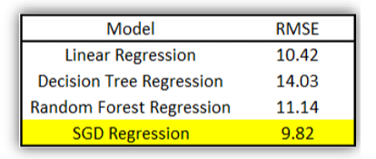
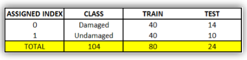
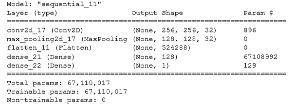
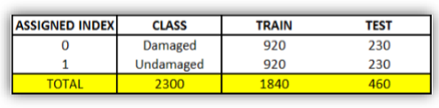
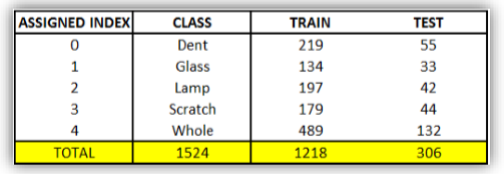
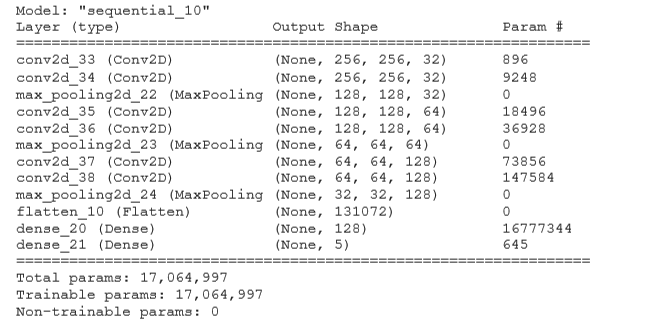
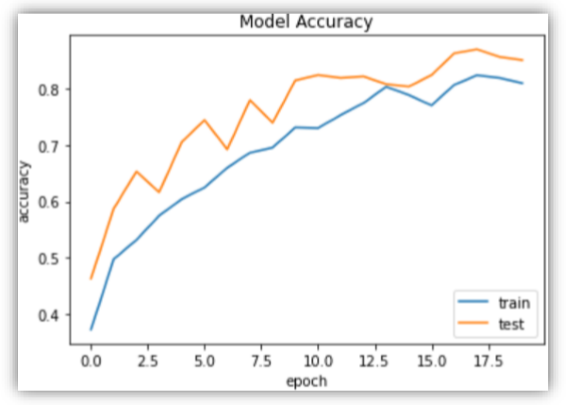
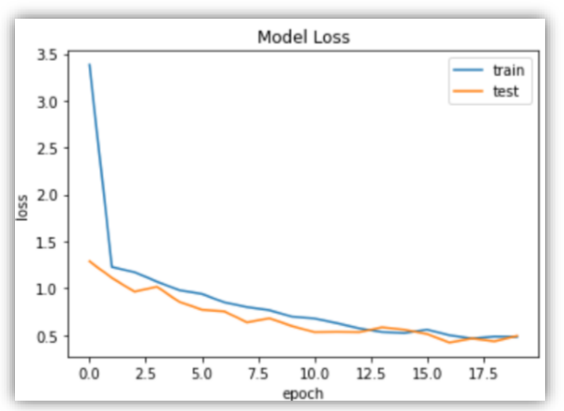
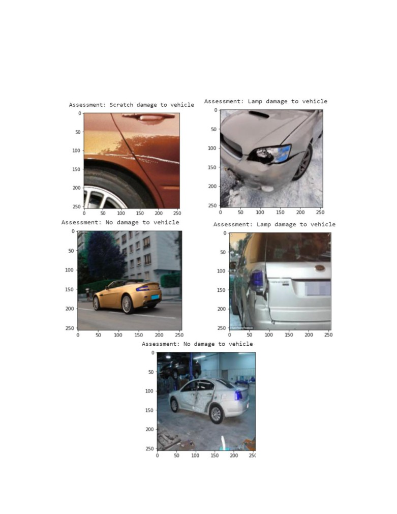

When we look at the histogram of the target variable ‘price_usd’, it can be said that the data is highly skewed on the positive side. The boxplot of target variable ‘price_usd’ shows the Minimum ($1), Maximum ($50,000), Q1 ($2,250), Q2/ Median ($4,900), Q3 ($9,000), Lower bound ($1), Upper bound ($19,112). From the correlation of the price_usd with every other feature show that predicting the price of used cars is most correlated with the year when it was produced, the older the car, the more it affects the price. Similarly, price of the car reduces as the odometer values (distance traveled in Kilometers) increases.
The idea is to take the images of cars taken from various angles and distance as input and make predictions on the
damage present in the car image. To work on the problem statement effectively, the set milestones to achieve along
with accurate predictions. These levels helped us to focus on issues that came with the dataset i.e. feature engineering,
overfitting, inaccurate predictions. The levels of the project are as follows:
1. Level 0: Used Cars Price Prediction: Linear Regression, Decision Tree Regressor, Random Forest Regressor,
Stochastic Gradient Descent Regressor
2. Level 1: Binary classifier – classify if the car is damaged or not with 104 images (80 + 24)
3. Level 2: Binary classifier – entire dataset (1218 + 306)
4. Level 3: Five-class classifier – classify with entire dataset (1218 + 306)
For cleaning the csv file, 5 attributes are dropped due to existence of special characters in foreign language. Using forward fill method, null values for all the variables have been removed. An attribute called ‘engine_fuel’ consisted of two values having the same meaning (‘gas’ and ‘gasoline’). Hence, ‘gasoline’ has been replaced with ‘gas’. To perform stratified split, the bins are created on the target feature as it contains unique values. Used column transfer, to encode categorical features and scale numerical features by building a pipeline and applied to the train and test data.
We ran various regression models on the cleaned and manipulated data in order to predict the target attribute ‘price_usd’ using 24 independent variables and 37,679 records. RMSE Since large errors are undesirable and we want to penalize the effect of large errors, RMSE has been used as an evaluation metric. Built simple models for linear, decision tree and random forest regression
As we compare the models, it can be said that the SGD Regression model has the lowest RMSE relative to other models.
The objective of this model is to classify a sampled dataset of 104 images into two classes – Damaged and Undamaged. The data is divided as follows:
 We ran a Convolutional Neural Network with 256 nodes.
Implementing max pooling reduced the nodes to 128 which is then flattened and densed into output node.

Increasing the dataset to 2,300 images for the above-mentioned Binary Classifier to verify the accuracy of the model.
Once being able to classify images of cars into two class, we implemented a Multi Image Classifier Convolutional Neural Network Model on 1524 images as follows:
We ran a CNN model with 256 nodes to start. In each layer MaxPooling is implemented to reduce the nodes to 128, 64 and then 32. These nodes are flattened and then densed into 5 output nodes, one node for each class.
As it can be seen from the plot, the model accuracy increases after every epoch for both train and test data. The model achieves maximum of 87.14% accuracy on test data. Also, the loss on both train and test data decreases after every epoch.
 It can be seen from the sample predictions that the model is able to classify the damage with good accuracy. In the images below, the model predicts Scratch on the car, damages on the lamp and an undamaged car. Although, the accuracy of model is good, there are some images that are being misclassified as undamaged. The reason behind might be the higher number of images in the undamaged class than other four classes.
